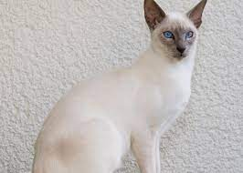

|  |
| Javanese |
BEHAVIOR
Javanese are intensely loyal and want to be with you as much as felinely possible. These cats are also extremely intelligent and intensely social. If you're not going to be home much, be sure your Javanese has a furry friend at home to keep her company.
Javanese are very chatty kitties, so if yours has something on her mind, expect to hear about it. These are athletic—even acrobatic—cats. If you can't find yours, check the top of the fridge.
GROOMING
Weekly brushing will take care of this easy-keeper. A freshly bathed Javanese is super soft, and might make the bother of an occasional bath worth your while.
Brushing your furry friend often helps remove dead skin and loose hairs, as well as shaking debris and dirt loose. Daily grooming will keep your cat from swallowing too much hair while she grooms, which can help cut back on the number of hairballs you accidentally step on while you're barefoot. An upside for both of you, surely. Most healthy, grownup cats won't need regular baths in addition to their own grooming routines—though if your cat is older, you might want to do some research on helping her keep up appearances.
HEALTH PROBLEMS
Progressive retinal atrophy: this disease is hereditary. It causes blindness in the affected cat over a short period of time. The disease can manifest itself at any point in the cat’s life. When it appears later in their life, it develops gradually, so that the cat has a reasonable amount of time to adapt to its blindness. However, if the cat is affected at a young age, their blindness is more severe and the cat has very little time to adapt.
NUTRITION
Your vet is the most qualified person to provide you with information regarding the best food to give your Javanese to keep them healthy.